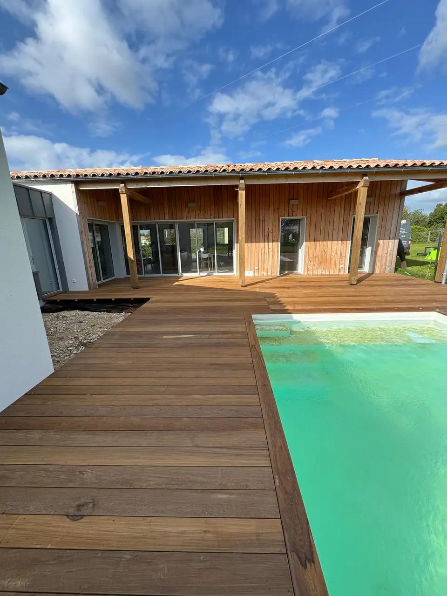
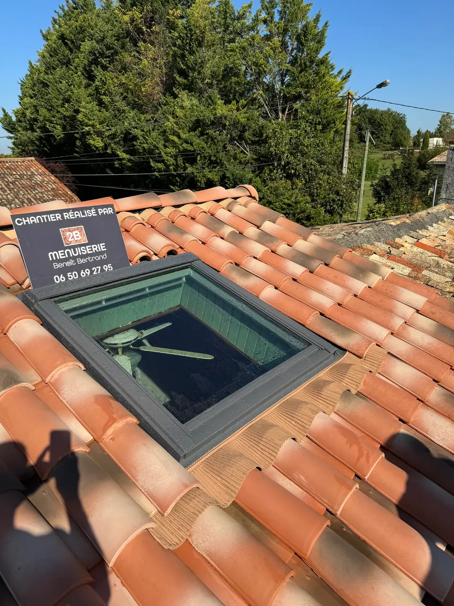

Savoir-faire
Des prestations sur mesure, dedans comme dehors
Chez 2B Menuiserie, chaque réalisation est pensée pour vous et avec vous. Voici les savoir-faire de l'atelier, de la cuisine au portail.
Prestation phare
Cuisine sur mesure
Je conçois, fabrique ou installe des cuisines personnalisées, fonctionnelles et belles, adaptées à vos goûts, à vos habitudes et aux murs de votre maison.
En savoir plus sur : cuisine sur mesure

Prestation phare
Terrasse en bois
Je crée des terrasses en bois durables et esthétiques, pour profiter de votre extérieur en toute saison : bord de piscine, plage de spa, prolongement du séjour.
En savoir plus sur : terrasse en boisPrestation phare
Placo & isolation
Je crée cloisons, doublages et plafonds en plaques de plâtre pour structurer vos espaces, améliorer l'isolation et préparer vos aménagements.
En savoir plus sur : placo & isolation

Prestation
Dressing & placards
J'optimise votre intérieur avec des dressings et placards sur mesure, pensés pour allier praticité et élégance, du sol au plafond.
En savoir plus sur : dressing & placardsPrestation
Parquet flottant
J'apporte chaleur et modernité à vos sols avec une pose de parquet soignée, pour un sol confortable, résistant et adapté à votre intérieur.
En savoir plus sur : parquet flottant

Prestation
Fabrication de meubles
Je crée ou restaure des meubles uniques, avec la finesse et l'âme de l'artisanat traditionnel : pas de série, chaque pièce est faite pour vous.
En savoir plus sur : fabrication de meublesPrestation
Fenêtres de toit Velux
J'installe des fenêtres de toit pour apporter lumière naturelle, confort et aération à vos combles, pièces sous pente ou espaces sombres.
En savoir plus sur : fenêtres de toit Velux

Prestation
Portails & clôtures
J'allie esthétique, sécurité et durabilité avec des portails, portillons et clôtures adaptés à votre maison et à votre terrain.
En savoir plus sur : portails & clôturesPrestation
Portes & fenêtres
Je pose vos menuiseries intérieures et extérieures : portes d'entrée, baies vitrées, portes intérieures et portes de garage, avec des finitions propres.
En savoir plus sur : portes & fenêtres
Devis gratuit
Votre projet ne rentre dans aucune case ?
Agencement de magasin, aménagement de gîte, petite réparation : appelez-moi, on en discute simplement.